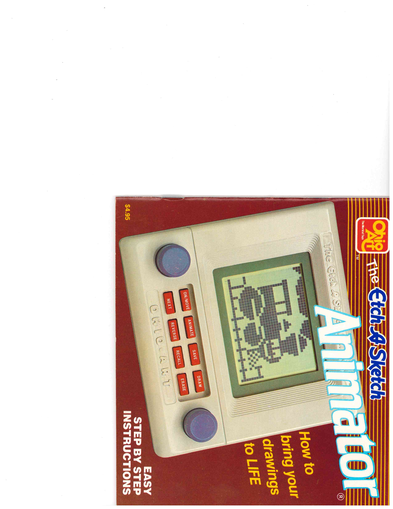
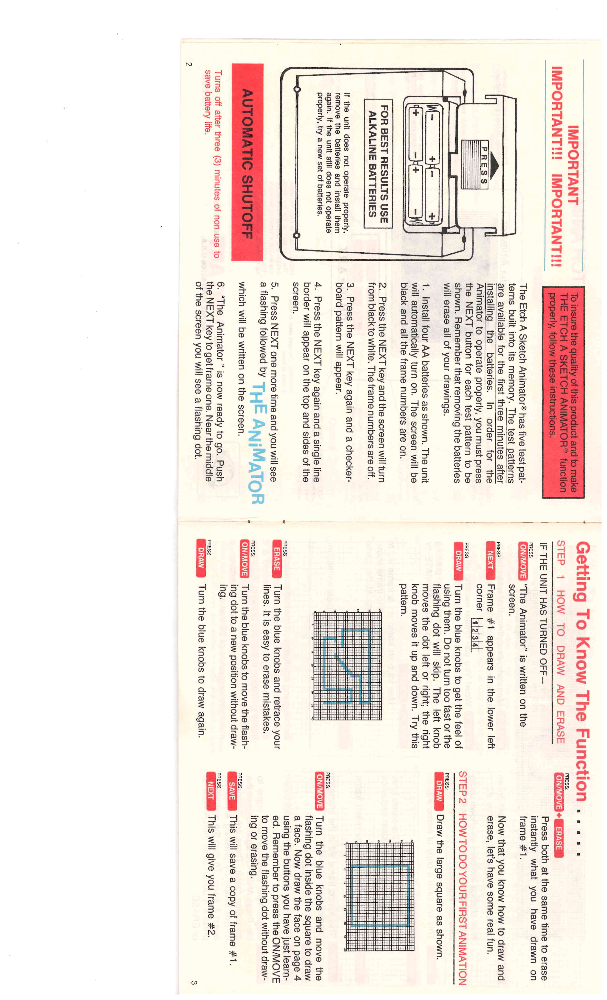

Etch A Sketch Animator
The classic knob-drawing ritual, digitized — a $90 toy with infrared rotary encoders and a frame-based animation engine

Overview
The Etch A Sketch Animator, released by The Ohio Art Company in 1986 at an initial price of $89.99, is the most famous mechanical drawing toy rebuilt as a computer. The classic Etch A Sketch — two knobs moving a stylus through aluminum powder behind a gray screen — was digitized into a handheld box with a 40x30 dot-matrix reflective LCD, two blue knobs, and eight function buttons. Turning the knobs still feels like turning the knobs; but beneath each one sits a slotted cup interrupting an infrared emitter and a pair of photodetectors, generating a quadrature code that a 4-bit Sanyo LC6523A microcontroller decodes into X or Y cursor motion. The device plays a static-like tone from its piezoelectric speaker while you draw, an auditory echo of the powder-grating sound of the original.
The deeper innovation is time. The Animator holds twelve frames of drawing in two kilobytes of SRAM, each frame a 40x30 bitmap, and plays them back as animation in sequences up to 96 steps long. You draw a frame, press SAVE, recall it as a base, modify it, save again — building a hand-made flip-book in memory. Eight buttons handle the workflow: On/Move, Draw, Erase, Save, Recall, Next, Animate, and Reverse (which XOR-inverts the image). Children built small film loops — a walking robot, a spider, a breakdancing skeleton were among Ohio Art's sample animations preserved at The Strong museum.
Precision matters here: the Animator does not tween. Every frame is hand-drawn; the toy stores and sequences them but never generates in-betweens. The remarkable HCI fact is the pairing of an utterly familiar analog ritual with a genuinely new computational one — frame-based time editing — in a consumer toy that sold well enough to lift Ohio Art's profits fivefold in a year. The Animator 2000 (1987-88) replaced the knobs with a stylus-and-touchpad and became a cartridge game system, dropping the very ritual that made the original special.
Deep dive
US Patent 4,764,763 'Electronic sketching device' (filed 13 December 1985, granted 16 August 1988; continuation US 4,887,968) describes the input: each knob drives a slotted cup passing between an IR source and two detectors. The two channels produce a quadrature phase difference, so the CPU reads both direction and distance of rotation with no mechanical contact — the physical feel of the Etch A Sketch preserved while the sensing becomes optical. One of the earliest consumer uses of rotary encoders as a drawing interface.
Two kilobytes of SRAM hold twelve 40x30 frames, and playback sequences step through them up to 96 times. SAVE accumulates the sequence; ANIMATE loops it; REVERSE flips the whole image with an XOR mask. The toy is effectively a frame-based animation editor with pen-up/pen-down drawing — the conceptual model of a cel animator's exposure sheet, compressed into eight buttons for children.
A piezoelectric speaker makes static-like sounds tied to cursor motion and noises during playback — an early example of sonified input in a consumer device, using the audio channel as continuous confirmation of drawing.
The Animator is documented by its patent, a complete 17-page scanned instruction manual on the Internet Archive, a The Strong museum object record (sample animations like 'Breakdancing Skeleton' appear in Google Arts & Culture), and a public-domain photograph of a surviving unit. Production ran until roughly 1989-90, when video game competition ended the line.
Team & pioneers
- The Ohio Art Company. Bryan, Ohio; manufacturer of the Etch A Sketch since 1960.
- James C. Wickstead. Co-inventor, US Patent 4,764,763.
- Gerald P. Selden. Co-inventor, US Patent 4,764,763.
- The Strong National Museum of Play. Holds Animator objects including sample animation cards.
Media


Sources
- Wikipedia — Etch A Sketch (Animator section)
- Google Patents — US 4,764,763 Electronic sketching device
- ToyTales — The Etch A Sketch Animator from Ohio Art (1986)
- FundingUniverse — The Ohio Art Company history
- Internet Archive — Etch A Sketch Animator Instructions (scanned manual)
- TechCrunch — Disappointing gifts: the Etch A Sketch Animator